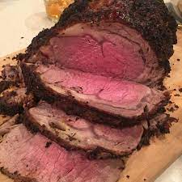

Prime Rib

Description
Prime rib cooked to a perfect medium rare!
Ingredients
- 4 pounds prime rib roast
- 1/4 cup unsalted butter, softened
- 1 tablespoon freshly ground black pepper
- 1 teaspoon herbes de Provence
- kosher salt
Directions
- Place rib roast on a plate and bring to room temperature, about 4 hours.
- Preheat an oven to 500 degrees F (260 degrees C).
- Combine butter, pepper, and herbes de Provence in a bowl; mix until well blended.
Spread butter mixture evenly
over entire roast. Season roast generously with kosher salt.
- Roast the 4-pound prime rib (see footnote if using a larger and smaller roast) in the
preheated oven for 20 minutes.
Turn the oven off and, leaving the roast in the oven with
the door closed, let the roast sit in the oven for 2 hours.
Remove roast from the oven,
slice, and serve.
Return to Main Page